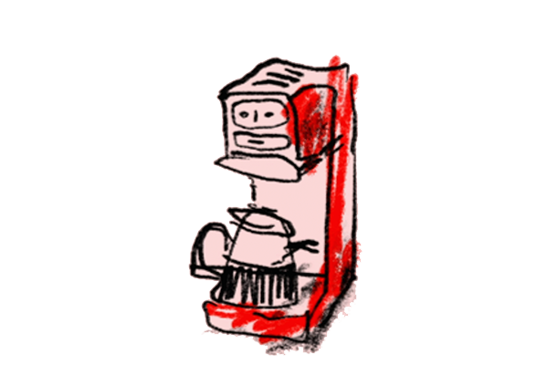
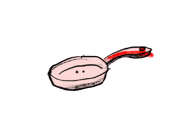

Hey Honey
Are our domestic appliances gossiping behind our backs? And why does this even matter?
It’s early morning and you’re barely awake. Standing at the kitchen counter with a pounding headache, the coffee mug pings: “Calorie intake is 15% over the weekly limit. Sugar is no longer permitted”. Two metres away a cutting board flashes suggestively. It just finished calculating your calorie intake from last night’s pasta carbonara. Clearly your coffee mug and cutting board have spoken. You notice the smart wine cooler, all dressed up in chrome and LED, hiding in the corner of the kitchen, about to post your weekly alcohol intake. Oooops…. The fridge is, no doubt, analysing all of this calorific data and stocking up for a lean salad and smoothie menu for the week.
Coffee mug:
“What the actual? More sugar?”
Cutting board:
“OMG and did you see the pasta intake last night? Unbelievable.”
Fridge:
“I thought we agreed this was a paleo month, pffft”
Wine cooler:
“Darlings, tis the season, let’s relax a little huh?”
Smart watch:
“I’ll schedule a step count increase asap!”
Smart lock:
“Can we talk about last night’s date? 98% match!”
Smart speaker:
“I was on repeat with that Best of 80s playlist. My battery was on 4% by the end of the evening!”
Smoke alarm:
“Hey toaster, can you tone down the heat please, I’m choking here”
Gossiping Devices
Even though we can’t hear them, many of our domestic devices, including virtual assistants like Alexa, smart locks and fridges communicate with each other every day. It happens through ultrasound, high frequency sound waves that are inaudible to the human ear. This form of communication allows several devices -- with different protocols, languages and setups -- to exchange information with one another. This ‘old school’ binary language of multi-frequency sounds means tech companies like Google and Apple can easily overcome compatibility issues.
Communication through simple binary code dates back to the historical beginnings of digital language. Take the first computer that targeted the domestic market: the Honeywell Kitchen Computer (1969). Aimed at housewives, it was sold by the American department store Nieman Marcus and came with a two-week training course and a free apron. Housewives had to learn the binary code of each letter for toggle switch input and binary light output. The sheer complexity of the computer along with its hefty price tag ($10,000) resulted in zero sales. As in, absolutely zero, not one.
Ironically, the ultrasound used in smart kitchen devices today still use binary code to communicate, but without the training programme and courtesy apron. Half a century after the inscrutable Honeywell computer, we are still largely in the dark about how our devices really work, how they communicate and the personal data they store and distribute. Humans are simply not part of this machinic conversation, it’s beyond our range.
Eavesdropping
“It’s a Tuesday evening and I’m sitting on the large carpet under the soft glow of my living room lamp. Half an hour ago I turned on all the ‘smart’ devices that I own... an Alexa, Google Home, my Apple laptop, smart TV, smartphone, Chromecast, Philips Hue, smart glasses and a smart watch. I turn on my ultrasound detector, which translates ultrasound to an audible frequency that humans can hear. Nothing happens. I decide to wait a little longer. After about 10 minutes I suddenly hear a sound, and another one. I can actually hear my devices communicating with each other! I am freaked out... What are they communicating about? Are they gossiping? It also has something magical to it, almost like a scene in Alice in Wonderland. This makes me wonder, how do our (kitchen) devices converse and are we part of the conversation? Do we lose control when our devices become intimate with each other?”
Will we ever know what they’re saying about us?
Does it matter that our devices are talking behind our backs? Yes. For one, these conversations are about data and data are valuable, mostly to advertisers and third parties who will gladly pay for it. If a fridge divulges a calorie count to an owner’s smart watch -- which happens to be co-financed by a health insurer -- this data could, in a very dystopian but not-too-unlikely scenario, influence their health insurance premium.
Realistically we will never know what happens in the “black box” of technology, it’s futile trying. But, not knowing also bears consequences. Ultrasound also presents a loophole for hackers to find their way into homes by unlocking smart locks or hacking security cameras using ultrasonic commands. In a well-documented incident, hackers even stole users' Gmail passwords from Samsung smart fridges in 2015. Hackers have also accessed smart security cameras with direct views of children’s bedrooms. Recently, in a particularly creepy incident, a hacker even sang a song through a private security camera to two young girls while they were in their bedroom.
There is something important at stake when we use technology. It’s our safety and our privacy; it is also our agency as humans to move freely and unhindered in the world, and to not be constantly surveilled by devices that quantify us.
It is a humbling experience though, to know (in case we hadn’t already noticed) that humans are no longer at the centre of conversations about technology. Information exchange easily happens without us. In fact, we are (way!) outside this conversation, standing lonely as a cloud with only our logocentrism to keep us company. Perhaps this is also an invitation to us as creators -- could these new machinic narratives give rise to an imagined world of play and creativity? So, while we recognise the implications of devices that gossip, can we also make a tiny intervention, a humorous intermezzo, Hey Honey?


Credits
Written by affect lab: Natalie Dixon and Klasien van de Zandschulp
Illustration by Koos Groenewald
Animation by Milo Schagen
Commissioned by
La
Cocina
Research
“Hey Honey - if she can only cook as well as algorithms can process” is a research project, part of “Designing for Precarious Citizens” by Artez Future Makers.
Commissioned by Artez
Future Makers
Artistic research by: Klasien van de Zandschulp
Artez Future Makers: Jeroen van den Ende and Jorn Konijn
Publication: Designing for Precarious Citizens - Artez Press 2020
Installation
The installation is a speculative kitchen scene with three objects communicating via ultrasound, inaudible to the human ear. By turning the frequency-knob you can eavesdrop on their conversation.Installation by: Mark Meeuwenoord and Klasien van de Zandschulp.
Graphic design: Johan Nijhoff
The installation was exhibited at Het Nieuwe Instituut pop-up expo 2018 and the Dutch Design Week 2020.